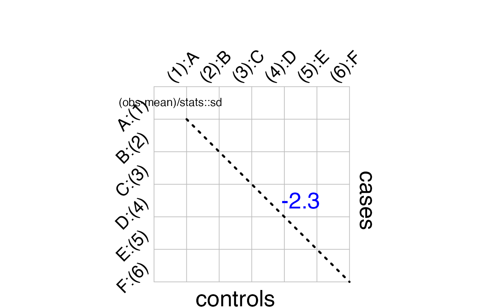

Posterior predictive checking for nested partially latent class models - pairwise log odds ratio (only for bronze-standard data)
Source:R/plot-model-check.R
plot_check_pairwise_SLORD.RdAt each MCMC iteration, we generate a new data set based on the model and parameter values at that iteration. The sample size of the new data set equals that of the actual data set, i.e. the same number of cases and controls.
Arguments
- DIR_NPLCM
File path to the folder that stores results from npLCM fit.
- slice
Default is 1, for the first slice of BrS data.
Value
A figure of posterior predicted log odds ratio compared with the observed log odds ratio for the BrS data. The function generates this figure in your working directory automatically.
See also
Other visualization functions:
plot.nplcm(),
plot_BrS_panel(),
plot_SS_panel(),
plot_check_common_pattern(),
plot_etiology_regression(),
plot_etiology_strat(),
plot_panels(),
plot_pie_panel(),
plot_subwt_regression()
Examples
# \donttest{
data(data_nplcm_noreg)
cause_list <- LETTERS[1:6]
J.BrS <- 6
model_options_no_reg <- list(
likelihood = list(
cause_list = cause_list,
k_subclass = 2,
Eti_formula = ~-1, # no covariate for the etiology regression
FPR_formula = list(
MBS1 = ~-1) # no covariate for the subclass weight regression
),
use_measurements = c("BrS"),
# use bronze-standard data only for model estimation.
prior= list(
Eti_prior = overall_uniform(1,cause_list),
# Dirichlet(1,...,1) prior for the etiology.
TPR_prior = list(BrS = list(
info = "informative", # informative prior for TPRs
input = "match_range",
# specify the informative prior for TPRs by specifying a plausible range.
val = list(MBS1 = list(up = list(rep(0.99,J.BrS)),
# upper ranges: matched to 97.5% quantile of a Beta prior
low = list(rep(0.55,J.BrS))))
# lower ranges: matched to 2.5% quantile of a Beta prior
)
)
)
)
set.seed(1)
# include stratification information in file name:
thedir <- paste0(tempdir(),"_no_reg")
# create folders to store the model results
dir.create(thedir, showWarnings = FALSE)
result_folder_no_reg <- file.path(thedir,paste("results",collapse="_"))
thedir <- result_folder_no_reg
dir.create(thedir, showWarnings = FALSE)
# options for MCMC chains:
mcmc_options_no_reg <- list(
debugstatus = TRUE,
n.chains = 1,
n.itermcmc = as.integer(200),
n.burnin = as.integer(100),
n.thin = 1,
individual.pred = FALSE,
ppd = TRUE,
result.folder = thedir,
bugsmodel.dir = thedir
)
BrS_object_1 <- make_meas_object(patho = LETTERS[1:6],
specimen = "MBS", test = "1",
quality = "BrS", cause_list = cause_list)
clean_options <- list(BrS_objects = make_list(BrS_object_1))
# place the nplcm data and cleaning options into the results folder
dput(data_nplcm_noreg,file.path(thedir,"data_nplcm.txt"))
dput(clean_options, file.path(thedir, "data_clean_options.txt"))
rjags::load.module("glm")
nplcm_noreg <- nplcm(data_nplcm_noreg,model_options_no_reg,mcmc_options_no_reg)
#> ==[baker] Results stored in: ==
#> /var/folders/rk/89yxmwcj4333kgsy6lh5q36r0000gn/T//RtmpvDoRwk_no_reg/results
plot_check_pairwise_SLORD(nplcm_noreg$DIR_NPLCM,slice=1)

#> ==[baker]A figure is generated for model checking: pairwise standardized log odds ratio difference (SLORD).
#> Stored in /var/folders/rk/89yxmwcj4333kgsy6lh5q36r0000gn/T//RtmpvDoRwk_no_reg/results ==
# }